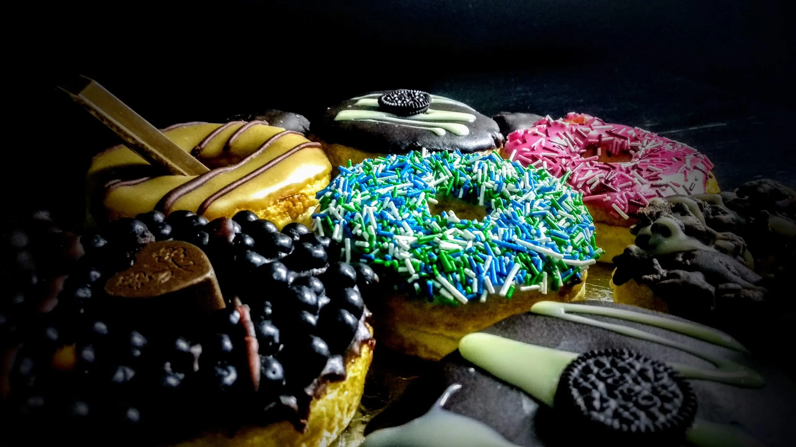

Doughnut
Prep Time: 30 minutes
Cook Time: 5 minutes per batch
Total Time: 1 hour 30 minutes
Servings: 12 doughnuts
Ingredients
- 2 1/4 teaspoons active dry yeast (1 packet)
- 1/4 cup warm milk (110°F/45°C)
- 2 tablespoons granulated sugar
- 2 large eggs
- 1/4 cup unsalted butter, melted
- 1/2 teaspoon vanilla extract
- 2 1/2 cups all-purpose flour
- 1/2 teaspoon salt
- Vegetable oil, for frying
Instructions:
- Activate Yeast: In a small bowl, dissolve the yeast and 2 tablespoons of sugar in warm milk. Let it sit for about 5 minutes until frothy.
- Mix Wet Ingredients: In a large bowl, whisk together the eggs, melted butter, and vanilla extract.
- Combine Ingredients: Add the yeast mixture to the egg mixture. Gradually add the flour and salt, mixing until a dough forms.
- Knead Dough: Turn the dough out onto a floured surface and knead for about 5 minutes until smooth and elastic. Place the dough in a lightly greased bowl, cover with a damp cloth, and let rise in a warm place for about 1 hour, or until doubled in size.
- Roll and Cut: Punch down the dough and roll it out to about 1/2 inch thickness. Use a doughnut cutter or two round cutters (one large and one small) to cut out doughnuts and holes. Re-roll the scraps as needed.
- Heat Oil: Heat vegetable oil in a deep fryer or large pot to 350°F (175°C).
- Fry Doughnuts: Carefully place a few doughnuts at a time into the hot oil, frying for about 2-3 minutes per side, until golden brown. Remove with a slotted spoon and drain on paper towels.
Nutritional Information(per doughnut):
- Calories: 250
- Fat: 12g
- Carbohydrates: 33g
- Protein 3g
Servings Suggestions:
- Serve warm for the best experience. Great with a cup of coffee or tea.
- Drizzle with melted chocolate or a chocolate ganache for a richer treat.
- Add colorful sprinkles or edible glitter on top of the glaze for a fun, festive touch.
Tips and Tricks:
- Oil Temperature: Maintain a consistent oil temperature for even frying. Use a thermometer for accuracy.
- Resting Time: Allow doughnuts to rest slightly after frying before glazing to ensure the glaze sets properly.